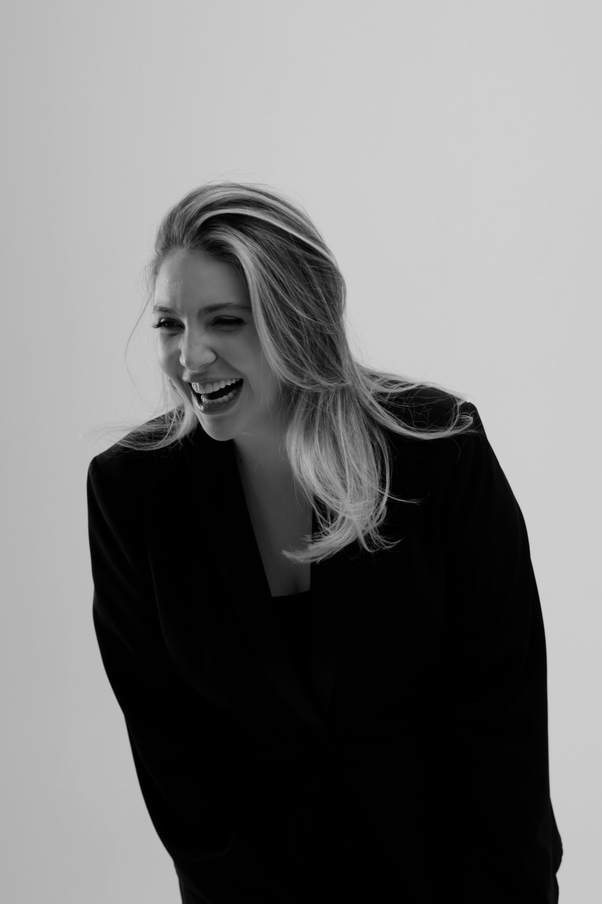
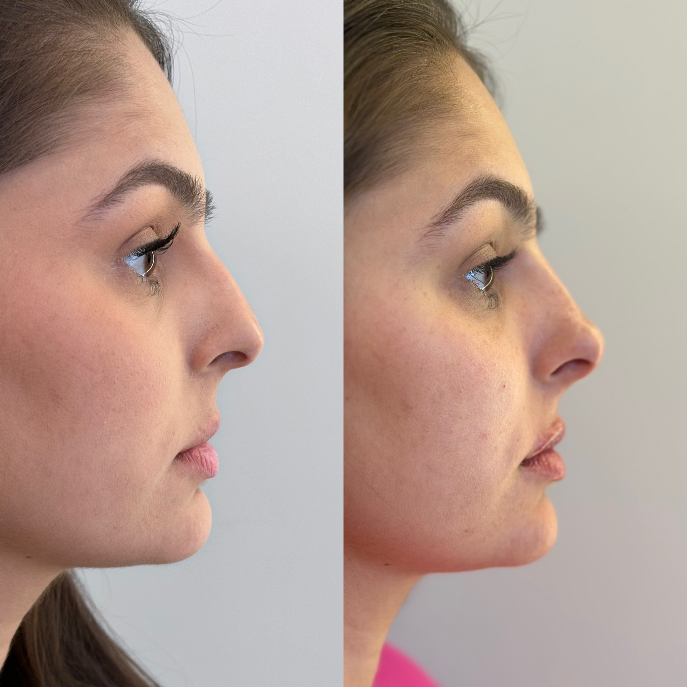
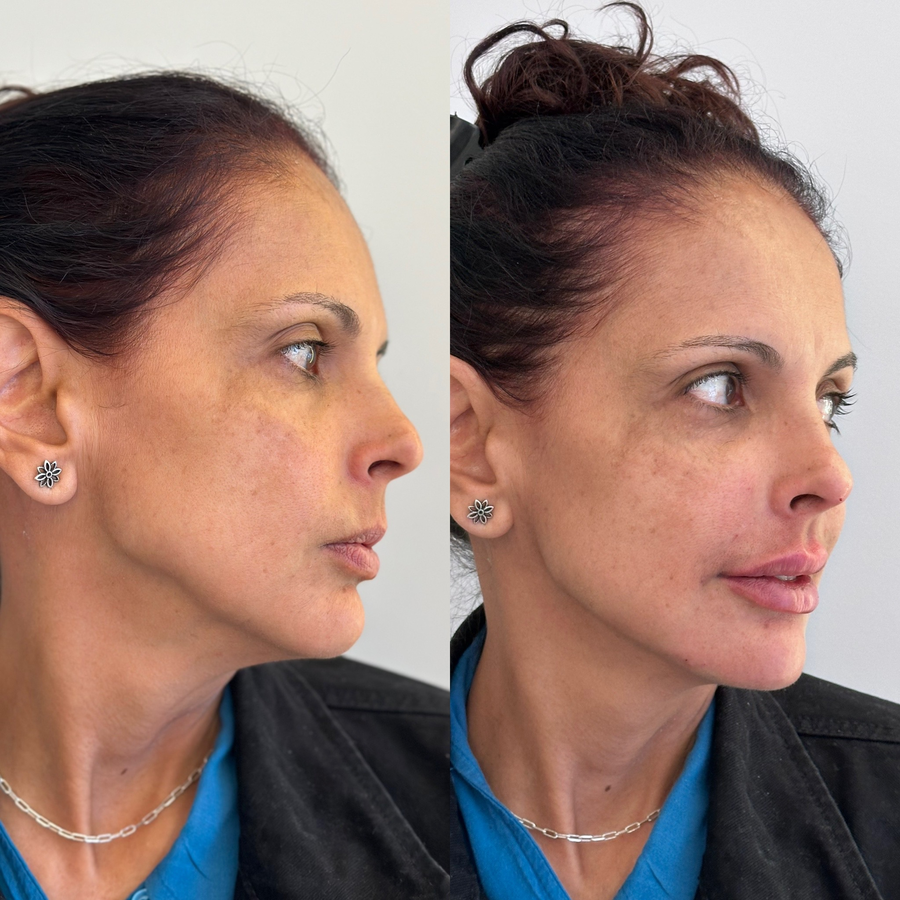
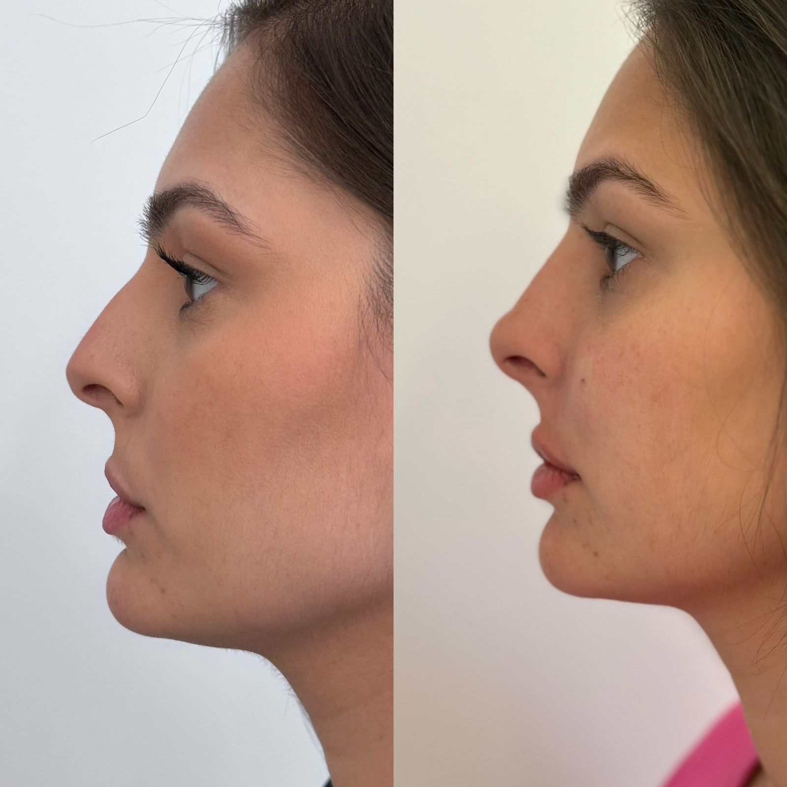

Estética facial · Pele · Sorriso
Antes de tratar,
é preciso enxergar.
Um olhar clínico e integrado para construir um rosto mais descansado, equilibrado e bem cuidado — sem apagar os traços que fazem você ser você.
“Meu trabalho não começa quando eu pego uma seringa. Começa quando eu aprendo a enxergar.”Dra. Larissa Andrade

Método LA™ — Leveza Autêntica
Sua queixa é o ponto de partida. O diagnóstico enxerga o todo.
Um olhar integrado para construir um rosto mais descansado, equilibrado e bem cuidado, sem apagar os traços que fazem você ser você.
Você pode chegar incomodada com uma região específica. Larissa acolhe essa prioridade, mas observa como estrutura, sustentação, volumes, movimentos, pele e sorriso se relacionam. É dessa leitura que nasce um plano individual — porque duas pessoas com a mesma queixa podem precisar de caminhos diferentes.
-
Escutar
Compreender o que você percebe, deseja e não quer perder.
-
Diagnosticar
Analisar o rosto de forma integrada, com registros fotográficos e observação clínica.
-
Priorizar
Definir o que realmente precisa ser tratado primeiro.
-
Planejar
Organizar um caminho possível para o seu momento.
-
Acompanhar
Revisar a evolução e refinar apenas quando necessário.
O plano pode ser realizado em etapas. A proposta não é fazer tudo, e sim saber por onde começar e onde parar.
O que podemos cuidar
Refinamento que respeita a sua identidade.
Harmonizar não é transformar um rosto em outro. É compreender o que está causando a mudança percebida e buscar mais equilíbrio, sustentação e leveza.
A mesma queixa pode ter causas diferentes. Por isso, o tratamento não é definido antes da avaliação.
Resultados reais
Mudanças percebidas. Identidade preservada.
Imagens reais, com autorização de uso. Resultados individuais — cada caso é avaliado e planejado de forma personalizada.





Da queixa ao planejamento
Você pode começar pelo que mais incomoda hoje.
A consulta inclui escuta, fotografias e diagnóstico completo da face. Quando houver indicação e disponibilidade, alguns tratamentos podem ser iniciados no mesmo dia. O planejamento pode ser organizado em etapas, respeitando as prioridades e o momento de cada paciente.
Escuta da queixa principal.
Fotografias clínicas.
Avaliação de estrutura, sustentação, volumes, movimentos, pele e sorriso.
Diagnóstico explicado à paciente.
Definição da prioridade.
Procedimento no mesmo dia, quando indicado.
Organização das próximas etapas.
Recursos clínicos
Cada ferramenta é escolhida por uma razão.
Não existe um único recurso adequado para todos os rostos ou para todas as peles. A indicação depende da queixa, da anatomia, da região tratada e do momento de cada planejamento.
Expressão, proporção e contorno
Toxina botulínica
Aplicada de forma individualizada para equilibrar a dinâmica muscular e suavizar marcas de expressão, preservando movimento.
Preenchedores faciais
Trabalham proporções, sustentação e contorno conforme as necessidades identificadas na avaliação.
Preenchimento labial
Planejamento de contorno, proporção e definição dos lábios com respeito às características individuais.
Rinomodelação
Ajustes de contorno nasal por preenchimento, avaliados dentro da proporção geral do rosto.
Abordagem full face
Leitura integrada das diferentes regiões do rosto para um planejamento coerente, que pode ser realizado progressivamente.
Bioestimuladores de colágeno
Estímulo gradual de colágeno, firmeza e qualidade da pele.
Qualidade e firmeza da pele
Lavieen
Renovação cutânea, luminosidade, textura e uniformidade da pele.
Plasma IQ
Flacidez, região dos olhos e renovação localizada da textura da pele, com indicação criteriosa.
Ultrafocus
Firmeza e sustentação em planos mais profundos.
Radiofrequência
Estímulo de colágeno e melhora gradual da firmeza da pele.
Limpeza de pele
Higienização profunda que prepara ou complementa determinados planos de cuidado.
Sorriso
Avaliação odontológica
Ponto de partida para entender saúde, função e estética do sorriso antes de qualquer indicação.
Limpeza
Higienização profissional como parte do cuidado preventivo.
Clareamento
Procedimento estético para uniformizar a cor dos dentes.
Restaurações estéticas
Recuperação de forma e função com resultado natural.
Quando o planejamento exige outras especialidades odontológicas, o cuidado pode ser integrado a profissionais da equipe ou parceiros de confiança.
O sorriso também faz parte da harmonia do rosto.
Saúde, função e estética caminham juntas. Quando necessário, o cuidado do sorriso complementa a leitura facial e contribui para um resultado mais equilibrado e coerente.
Dra. Larissa Andrade
Existe um olhar e uma estrutura antes de cada decisão.
Para Larissa, o tratamento começa pela escuta e pela observação. Cada rosto tem uma história e uma forma própria de expressar identidade. Sua atuação integra estética facial, qualidade da pele e sorriso em planejamentos construídos com diagnóstico, progressão e preservação da identidade.
Cirurgiã-dentista · CRO-GO 15179 · Especialista em Harmonização Facial
Graduada em Odontologia pelo Centro Universitário de Anápolis (UniEVANGÉLICA).
Currículo Lattes ↗
Dúvidas antes de agendar.
Como funciona a avaliação?
A consulta começa pela escuta da sua queixa e do seu momento, seguida de fotografias e de um diagnóstico completo da face. Larissa analisa as relações entre estrutura, contorno, expressão, pele e sorriso antes de indicar qualquer caminho.
Preciso saber qual procedimento quero realizar?
Não. Você pode chegar apenas com uma percepção ou um incômodo. O papel da avaliação é entender o que está por trás dele e quais possibilidades fazem sentido.
Posso começar pela minha principal queixa?
Sim. A prioridade é acolhida. O restante do rosto também é avaliado, mas o cuidado pode começar pelo que mais incomoda você, desde que exista indicação.
O planejamento precisa ser realizado de uma vez?
Não. O plano pode ser dividido em etapas, respeitando prioridades, tempo e desejo da paciente.
É possível realizar um procedimento no mesmo dia?
Quando houver indicação clínica, segurança e disponibilidade, alguns tratamentos podem ser iniciados no mesmo dia.
Como faço para agendar?
O agendamento é realizado pelo WhatsApp. A equipe explicará como funciona a avaliação e apresentará as opções de horário.
Seu tratamento não precisa começar por tudo. Precisa começar por uma avaliação que enxergue o todo.
Conte o que você percebe hoje. A partir disso, Larissa realizará um diagnóstico completo e orientará um caminho possível para o seu momento.